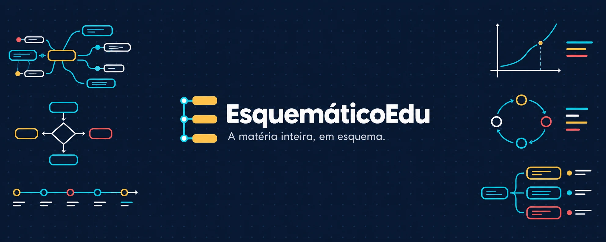

Da base ao domínio
Nada de pressupor que o aluno já sabe o básico. A aula começa no começo e sobe em camadas até o assunto inteiro.
Canal educacional no YouTube
Aulas completas, de cerca de 60 minutos, para estudar um assunto do primeiro conceito até o exercício de prova. Conceito, fórmula, exemplo e resolução, com esquemas que aparecem na hora em que são explicados.
Canal novo: as primeiras aulas estão sendo produzidas. Os PDFs de revisão vêm depois delas.
O que entra
Conceito
O que é, por que funciona e de onde vem. A ideia antes do nome, para o resto da aula fazer sentido.
O que entra
Fórmula
A origem de cada termo e o que ele mede. A fórmula deixa de ser símbolo solto e passa a ter sentido.
O que entra
Exemplo
O raciocínio completo, passo a passo, com o porquê de cada escolha no caminho.
O que entra
Exercício
Questão de prova real, com ano e fonte, resolvida e explicada até o fim.

Nós, linhas e esquemas sobre o azul do quadro. A mesma linguagem das aulas.
01O canal
O EsquemáticoEdu é um canal de aulas completas. Cada vídeo começa no que é fundamental e avança em camadas até o aluno resolver o que aparecer pela frente, inclusive as variações que nunca viu.
Nada de pressupor que o aluno já sabe o básico. A aula começa no começo e sobe em camadas até o assunto inteiro.
O foco está em compreender o que o problema pede e por que a solução funciona. Quem entende o problema resolve a variação.
Questões de vestibulares, ENEM, concursos e olimpíadas, com ano e fonte. A resolução é produzida pelo canal.
“Quem entende o problema resolve a variação que nunca viu.”
02Trilhas
O canal atende níveis e objetivos diferentes. Cada trilha reúne aulas de um mesmo caminho, e novas áreas entram conforme o acervo cresce.
Trilha 01
As matérias do 6º ao 9º ano, para quem está acompanhando a escola ou precisa recompor uma base que ficou para trás.
O que entra
As playlists de cada trilha entram no ar junto com as aulas.
03A aula
A estrutura se repete para o aluno saber onde está e o que vem depois. A duração é referência: alguns temas pedem mais tempo, outros menos.
Parte da aula
Conteúdo
03:00 a 40:00
De 4 a 5 blocos de 8 a 10 minutos. Cada bloco traz conceito, exemplo e um mini exercício.
No material em breve: vira resumo esquematizado, com o mesmo desenho do vídeo.
04Por dentro
Cada cena é uma página, não um slide. O HyperFrames, framework open-source da HeyGen, abre essas páginas em um navegador sem interface e transforma tudo em vídeo MP4 de forma determinística.
Como texto, fórmulas e esquemas vivem no mesmo arquivo, o que aparece animado no vídeo pode virar uma página estática no PDF. O mesmo conteúdo serve aos dois formatos, sem redesenhar nada.
Antes de renderizar, cálculos, conceitos e datas passam por revisão. A narração entra sincronizada com o momento em que cada parte do esquema aparece.
Efeito colateral útil: a mesma entrada gera o mesmo vídeo. Se uma cena precisar de correção, ela é corrigida na origem e renderizada de novo.
O escopo vem do edital, da matriz de referência ou do programa do tema.
Conceito, fórmula, exemplo e resumo viram cenas com texto curto e esquemas em SVG.
A voz acompanha o ritmo das cenas: cada parte surge quando é explicada.
O navegador sem interface monta os quadros e o FFmpeg grava o MP4.
05Materiais
Os materiais abaixo ainda não estão à venda. Eles saem depois das primeiras aulas, montados a partir do mesmo conteúdo que já está no vídeo.
O assunto inteiro em uma página, com a mesma estrutura do vídeo: conceito, fórmula, exemplo e resumo.
Fórmulas e dados para consulta rápida, sem precisar procurar no meio da aula.
As conexões entre os conceitos em uma folha para imprimir e revisar antes da prova.
Questões de provas reais, com ano e fonte, resolução comentada e o porquê de cada passo.
Um assunto ou um edital inteiro, organizado em capítulos, para quem quer estudar fora da ordem das aulas.
O que estudar, em que ordem e em quanto tempo, por área ou por prova.
Quando os primeiros PDFs estiverem prontos, o aviso sai no canal. Nada está à venda antes disso.
Acompanhar no YouTube06Perguntas
O canal está no começo. Se a dúvida não estiver aqui, os comentários dos vídeos são o lugar para perguntar.
Abrir o canal no YouTubeNão. Cada aula começa no que é fundamental e avança em camadas. Se o assunto for novo, a aula foi feita para esse caso.
Nenhuma prova define o canal. As trilhas cobrem ensino fundamental, ensino médio, ENEM e vestibulares, concursos civis e militares, disciplinas de graduação e temas avulsos.
Sim. Cada questão traz o ano e a fonte, e a resolução é produzida pelo canal. O material de terceiros não é copiado.
Depois das primeiras aulas, que ainda estão sendo produzidas. A lista de materiais acima é o plano atual, e o aviso de lançamento sai no canal.